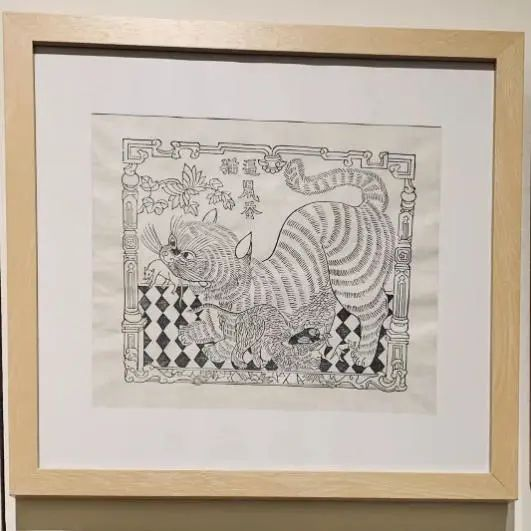
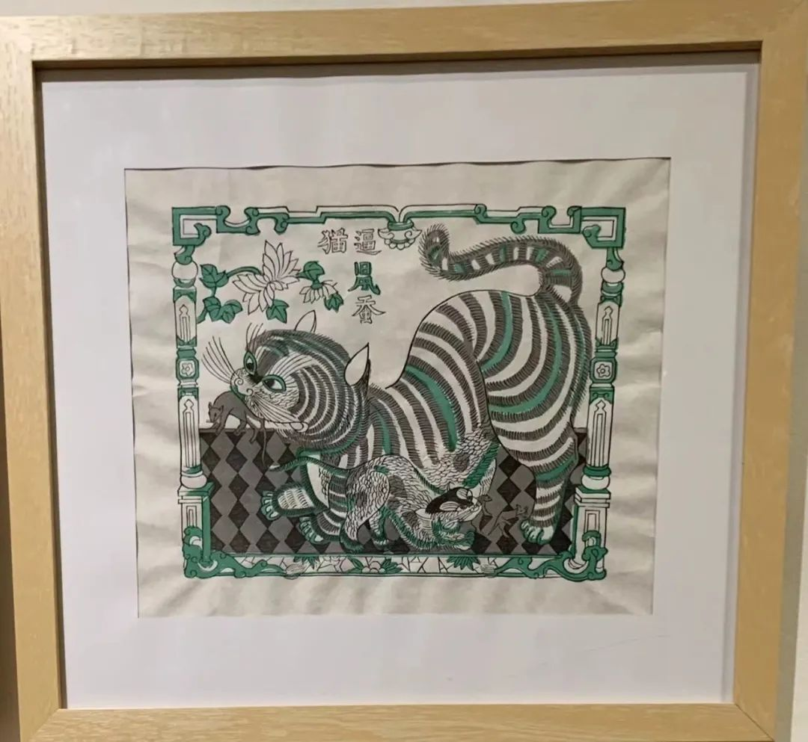
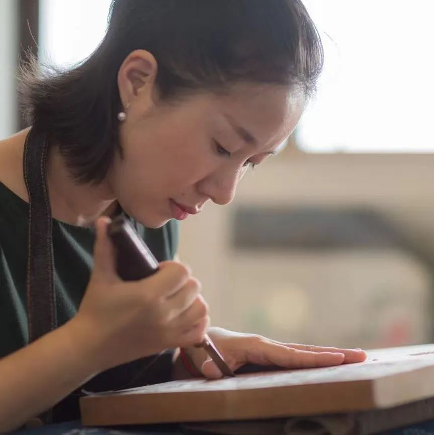
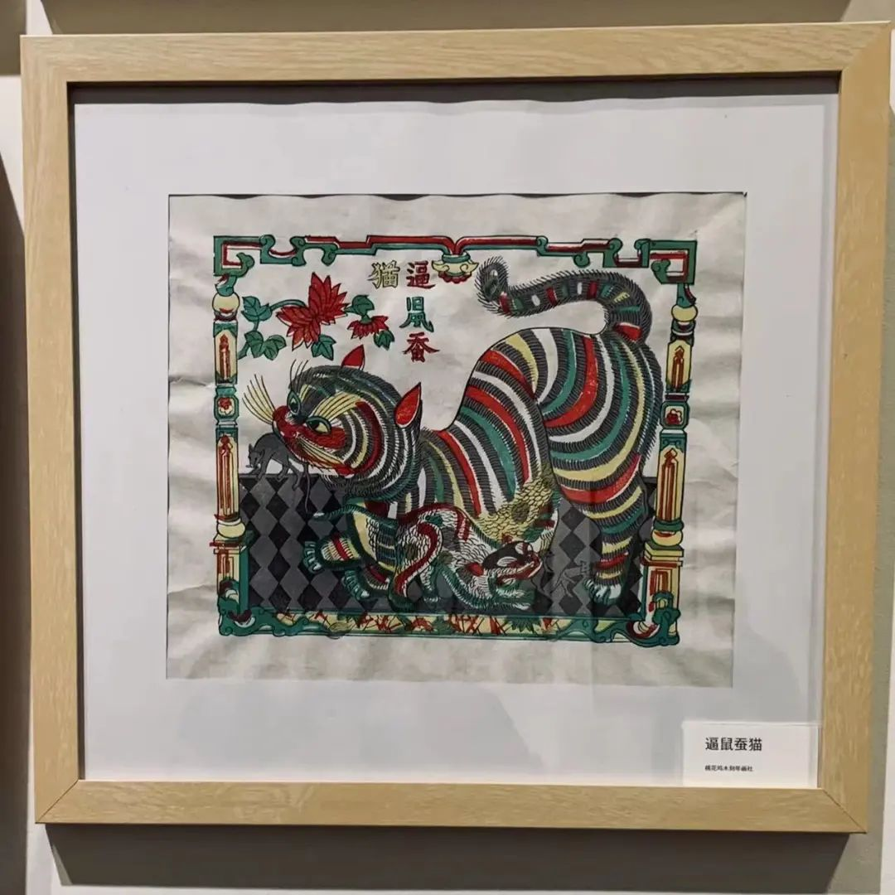
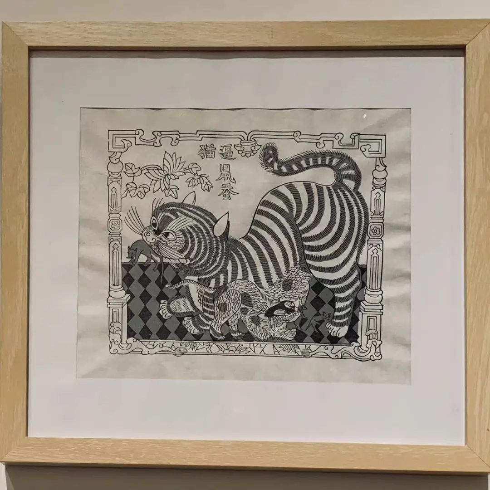
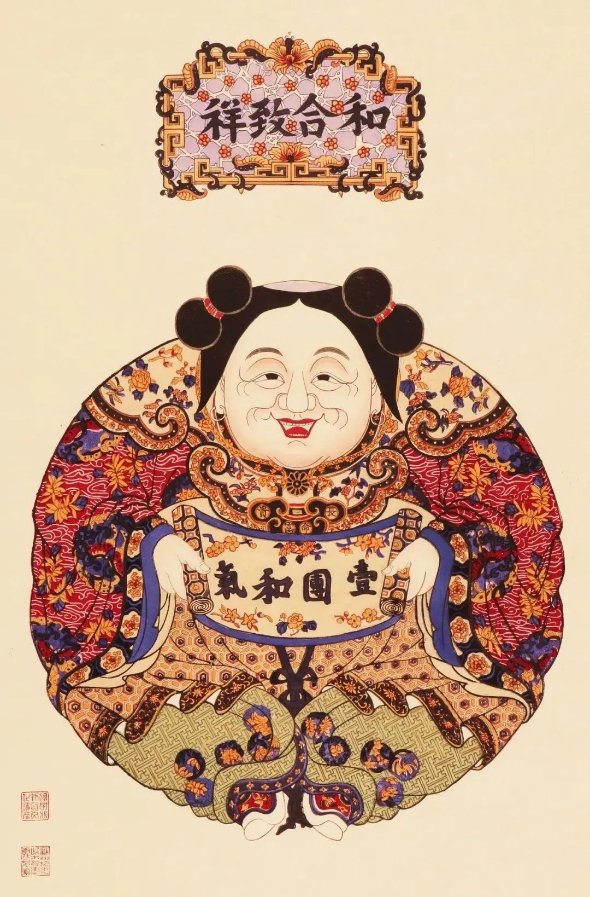

传统美术 · 一版一色
木版年画
工序 01 / 04
画稿
先把一年的祝愿，安放在画面里。
画稿先确定人物、花叶和边框的关系，再交给刻版与印制。这里用《逼鼠蚕猫》的墨线印样观察构图：还没有铺满颜色，猫身的条纹和花叶的转折已经清楚可见。


工序 02 / 04
刻版
纸上的线，要成为木上的起伏。
画稿上样后，匠人沿线运刀，把图案转成可以印刷的版面。照片中，乔兰蓉握着拳刀刻版；留住线条、刻去空处，每一次转折都要靠手上的分寸。

工序 03 / 04
套印
一版一色，让画面逐次相遇。
先印墨线，再逐版套色。看同一幅《逼鼠蚕猫》：淡墨加深层次，绿色落到花叶与纹样上，随后红、黄等色补入。每一次换版，都要让新颜色和原来的线条对齐。


工序 04 / 04
成画
从年节墙上，走进今天的书页与桌面。
纸本年画完成后，图像还可以有新的去处：丝巾、杯垫、书签，让吉祥纹样被日常使用；木刻年画套装则把刻与印带回桌面。印花衍生品不等同于木版水印原作，一次手作体验也只是走近完整技艺的开始。
